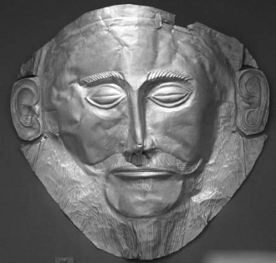
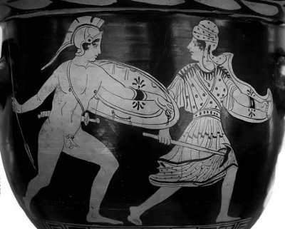

Odisseus, yüzlerce Yunanlı kent krallıklarından biri olan Ege denizindeki İtake adasının kralı Laertes'in oğluydu... Ama yaygın bir söylenceye göre anası, kral Laertes'le evlenirken ünlü kral Sisifos'tan (Sisyphos) gebeydi! Zaten bütün kurnazlığı ve cin gibi akıllılığıyla da Odisseus, gerçek babası Sisifos'un hık deyip burnundan düşmüş gibiydi! Çünkü gerek el işlerinde, gerekse en çetrefil sorunların çözümünde babası Sisifos gibi son derece becerikliydi. O yüzden de kral Laertes yaşlanınca, her giriştiği işte kendi aklının dediklerine uyan bu üstün yetenekli oğluna bıraktı tahtını...
Odisseus kral olunca, güzel Helena'yla evlenmek isteyen damat adayı kralların ve prenslerin arasına o da katıldı... Ne var ki damat olamayacağını sezinleyince de şöyle bir öneri attı ortaya: Güzel Helena, bu damat adaylarından birini gönlünce seçmekte özgür bırakılsın. Seçeceği kişiye de herkes saygı göstersin. Ama geçen zaman içinde Helena'ya bir şey olursa, bütün damat adayları ona arka çıksın... Bu öneri bütün adaylarca benimsendi. Bunun üzerine Helena da kalkıp kral Menelaus'u kendine eş seçti. Odisseus da gidip Helena'nın amcasının kızı, güzel ve soylu Penelopeya (Penelopeia) ile evlendi. Bu evliliklerinden de Telemahos adlı bir oğlan çocukları oldu...
Gerçekten Odisseus savaşı kutsayan bir kral değildi. Tam tersine savaşın ne menem insanlıkdışı bir yıkım aracı olduğunu aklıyla kavrayabiliyordu. Bu yüzden o, yaşadığı dünyanın nimetlerine bağlı ve babası kral Laertes gibi sürüleriyle ve toprakla uğraşmayı seven, doğanın gizemlerini çözmeye çalışan biriydi. Bir işe girişmeden önce bin kez düşünenlerdendi! Tanrıların söylediklerine de pek önem vermezdi. Onun varı yoğu, uğraş olarak sürdürdüğü tarıma ve hayvancılığa dayanmaktaydı. Diğer krallar gibi komşu halkları savaş yoluyla sömürmeyi hiç düşünmedi. Kısacası Odisseus, Akdeniz'deki dingin İtake adasındaki yurttaşları ve çok sevdiği çoluk çocuğuyla sorunsuz yaşayıp gitmeyi yeğliyordu. Ne var ki günün birinde evli barklı güzel Helena, Troya prensi yakışıklı Paris'le Troya sarayına kaçınca, Başkral Agamemnon, Troya'ya savaş açtı. Odiseus'un önerisiyle kabul edilen anlaşma uyarınca da bütün kent krallarının savaşa katılmasını istedi.

Başkral Agamemnon
Başkral Agamemnon'un bu girişimlerini duyan Odisseus da, savaşa katılıp sağ kalsa bile yıllarca çoluk çocuğundan ve de çok sevdiği halkından ayrı kalmasının söz konusu olacağını düşündü hemen! Zaten ülkesinden ayrılmayı hiç düşünmeyen kurnaz ve akıllı Odisseus; bu savaşı çıkaran Agamemnon'un, Helena'nın namusu dediği örtülerin altındaki gerçek niyetinin ne olduğunu göremeyecek denli safdil de değildi... Ülkesini de yurttaşlarını da ilgilendirmeyen bir savaş bataklığına saplanmamak için kendisini almaya gelen Başkral Agamemnon'un elçilerine delirmiş gibi davrandı. Deniz kıyısındaki kumların üstüne tuz ekti. Sonra da çifte koştuğu öküzleriyle kumlu sahili sürmeye başladı!.. Ancak kendisini izleyen elçilerden birinin kafası bu oyuna pek yatmadı! Bu yüzden öküzlerin geçeceği yere, Odisseus'un oğlu Telemahos'u koydu, o da oğlunu çiğnetmemek için hemen çifte koştuğu öküzlerin yönünü değiştiriverdi!.. Böylece kendini ele veren Odisseus, Troya savaşına katılmak zorunda kaldı...
Denizkızı tanrıça Tetis de, hem işgal ve talan amaçlı Troya savaşına karşıt olanların, hem de oğlu Ahilleus'un bu savaşa katılmasını istemeyenlerin başında geliyordu. Çünkü çocuğunu doğurduğundan beri biliyordu ki, oğlu bir gün patlayacak Troya savaşına katılırsa Troya düşecek; oğlu büyük bir ün kazanacaktı... Ama savaş sırasında da, gencecik ölecekti!.. İşte bütün bunları bildiğinden denizkızı tanrıça ölümsüz Tetis; oğlu Ahilleus'u da kendisi gibi ölümsüzlüğe ulaştırmak için, daha bebekken onu ayak bileğinden tutup ateşin üstünde tavlamış, ölümlü hücrelerini yok etmişti. Ama eliyle tuttuğu topuğu ateş görmediği için, orası silahlara karşı tek duyarlı yeri olarak kalmıştı! Bunu da bildiğinden, savaşa katılıp gencecik ölmemesi için onu küçük yaşta hep kız çocukları olan kral Likomedes'in (Lykomedes) sarayına göndermişti. Ama Troya savaşı başlayınca da ünlü bilici Kalhas, Ahilleus olmadan Troya'nın düşmeyeceğini söyledi Başkral Agamemnon'a. Kız kılığında onun saklandığı yeri de açıkladı!.. Bunun üzerine Agamemnon, yazgının bir cilvesi olarak, Ahilleus'u kızların arasından bulup çıkarma görevini kurnaz Odisseus'a verdi!
Odisseus da bohçacı bir kadın kılığına girdi; çok çekici rengârenk giysiler ve takılarla doldurduğu bohçasının içine bir iki tane de pırıl pırıl yanan kılıç koydu ve genç kızların oturduğu saraya gitti. Kız kılığındaki Ahilleus da bohça açılır açılmaz, büyük bir ilgiyle hemen kılıçları eline alıp incelemeye başladı!.. Böylece Ahilleus da kendini ele vermiş oldu!..
Troya'yı yağmalayacak ve sonunda ateşe verecek işgal ordularından birinin en ünlü komutanı olacak Ahilleus da, artık Odisseus örneği, nice canlar yakacak bu savaşa bulaşmış oldu...

Ahilleus ve Pentesileya